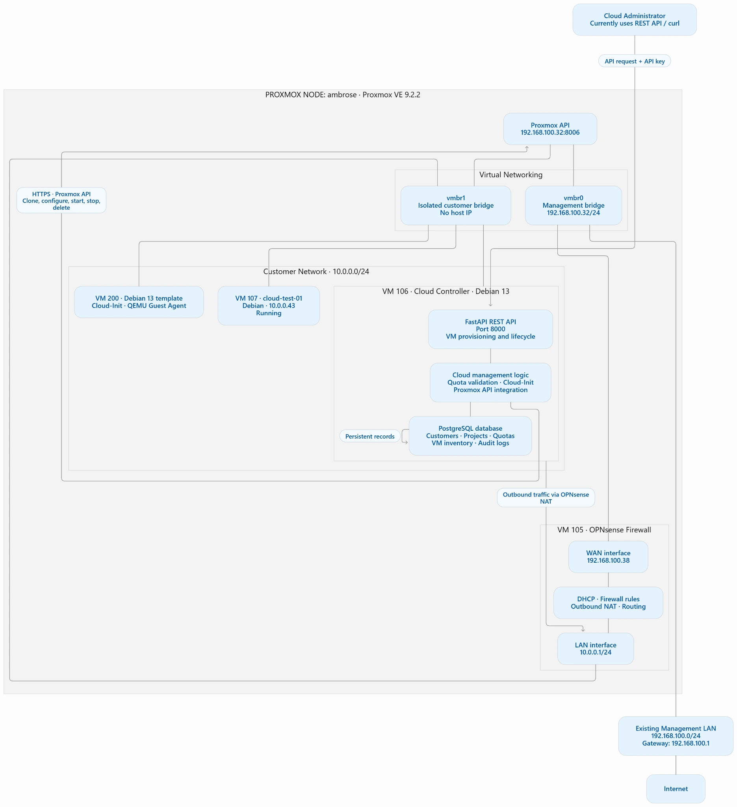
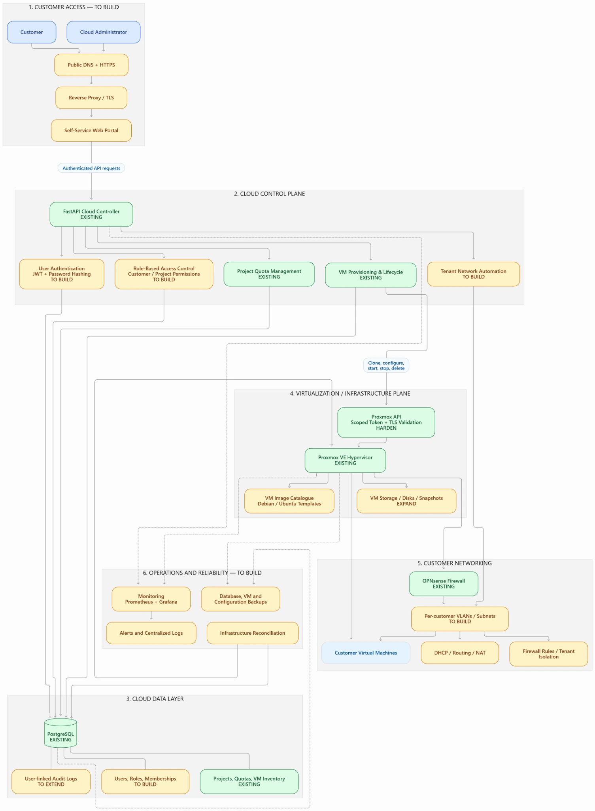
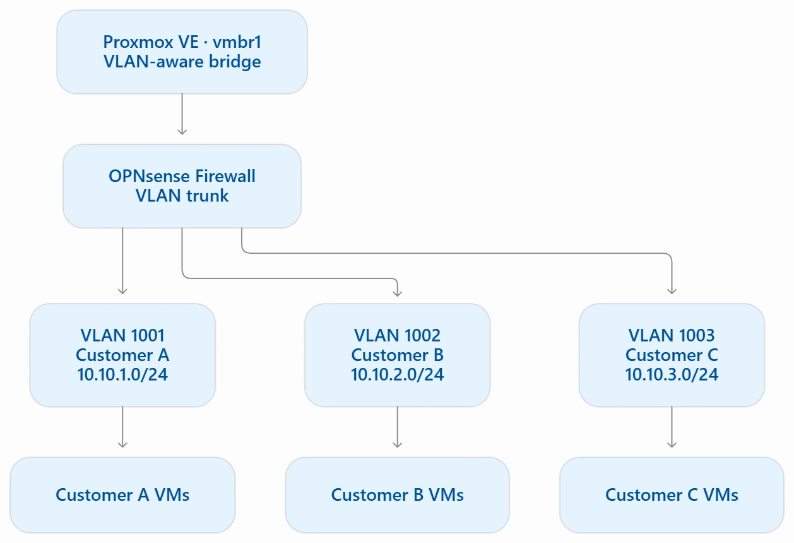
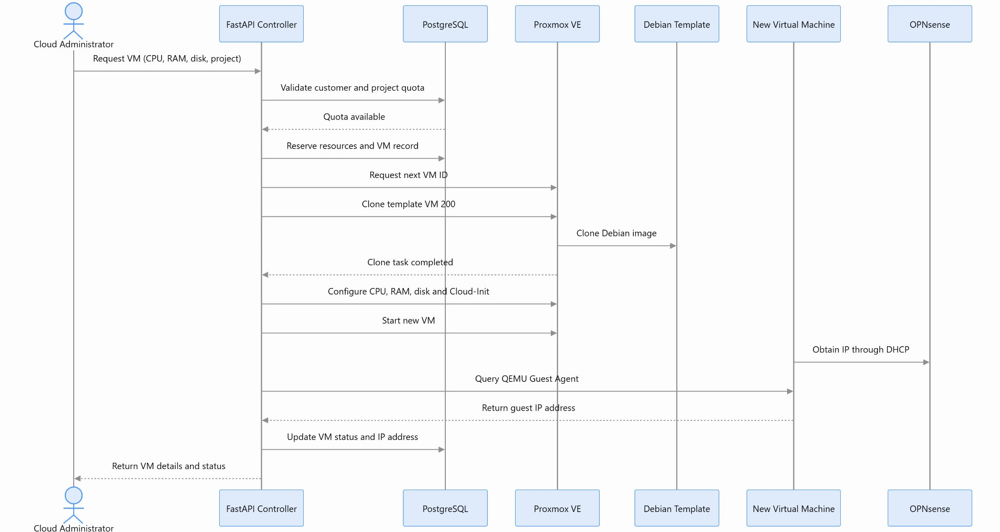

Building a Multi-Tenant Private Cloud.
A self-hosted Infrastructure as a Service platform combining virtualization, network segmentation, infrastructure automation, customer identity and resource orchestration.
From a virtualisation lab to a cloud platform.
The objective is to build a multi-tenant environment where customers can register, create projects, provision Linux virtual machines and manage resources through a centralised control plane.
What am I building?
A private cloud platform with a self-service provisioning workflow, customer accounts, project-based resource management and isolated workload networks.
The backend communicates with Proxmox through its API, while PostgreSQL maintains customer identity, memberships, quotas, virtual machine records and audit events.
OPNsense provides routing, firewall enforcement, address translation and customer network segmentation. Debian Cloud-Init templates provide the foundation for repeatable VM deployments.
How the platform fits together.
Three interconnected layers: a cloud control plane, a virtualisation and provisioning layer, and a segmented network and security layer.
Customer self-service web frontend is planned; the API control plane is already implemented.
The build, from network to control plane.
The diagrams below show the current infrastructure, the planned cloud control-plane work, customer network segmentation and the VM provisioning sequence. Open any diagram to inspect it at full size.

This is an earlier topology drawing. The live bridge roles are: vmbr0 management, vmbr1 internal infrastructure (10.0.0.0/24), and vmbr2 the VLAN-aware customer trunk.

The diagram distinguishes existing components from work still to build, including customer portal access, tenant network automation, monitoring, backups and production hardening.

Customer A (VLAN 1001) and Customer B (VLAN 1002) are deployed. Customer C / VLAN 1003 is a future expansion example. The live customer trunk is vmbr2; the vmbr1 label in this planning image is outdated.

The sequence captures the intended orchestration path across FastAPI, PostgreSQL, Proxmox, the Debian template, the guest VM and OPNsense. Automatic tenant network assignment is the next integration milestone.
The technologies behind the build.
Infrastructure, operating systems, backend development, identity, networking and DNS.
Proxmox VE 9.2.2
VM hosting, API integration, VM cloning and lifecycle management.
OPNsense 26.7
Routing, stateful firewall policies, VLAN gateways and outbound NAT.
Debian 13
Linux guest operating system and reusable cloud template.
Cloud-Init
Automated initial configuration and guest provisioning.
Python / FastAPI
Cloud API, authentication, customer management and VM orchestration.
PostgreSQL 17
Customer accounts, project records, quotas, VMs and audit events.
JWT / Argon2id
Token-based authentication, password hashing and RBAC.
Dnsmasq / Unbound
Customer address allocation and DNS resolution with DNS-over-TLS.
802.1Q VLANs
Tagged virtual network segmentation and tenant network separation.
Segmentation by design.
The Proxmox host uses separate bridges for management, internal infrastructure and customer workloads. Customer traffic is routed and filtered by OPNsense.
Management Network
Proxmox management and OPNsense WAN connectivity.
Internal Network
Cloud Controller and existing infrastructure workloads.
Customer Network
VLAN-aware bridge carrying isolated customer workload traffic.
Customer A — VLAN 1001
Dedicated subnet, DHCP scope, gateway, DNS and outbound NAT. Test VM 109 received its lease successfully.
Customer B — VLAN 1002
Separate subnet, DHCP scope, gateway, DNS and outbound NAT. Test VM 110 received its lease successfully.
Both customer networks use vmbr2 as the VLAN-aware bridge and OPNsense as the default gateway. Inter-customer traffic is blocked by per-VLAN private-network firewall rules.
Where the project stands.
Progress is tracked by implemented and tested capabilities, not estimated completion percentages.
Automated tenant network provisioning
Next milestone: connect customer and project records to automatic VLAN, subnet and firewall provisioning through the FastAPI controller.
Proxmox VE 9.2.2 with vmbr0 management, vmbr1 infrastructure and VLAN-aware vmbr2 customer trunk.
Reusable VM template 200 with Cloud-Init and QEMU Guest Agent.
VM lifecycle API, Proxmox API integration, customer/project records, quotas and VM inventory persistence.
JWT authentication, password hashing, memberships and owner/admin/member/viewer access checks.
Template cloning and VM start, stop, reboot and delete workflows through the controller.
DHCP lease, gateway, DNS, outbound NAT and external HTTPS verified from VM 109.
DHCP lease, gateway, DNS, outbound NAT and external HTTPS verified from VM 110.
Customer A to B and B to A traffic was blocked; OPNsense firewall logs recorded both directions.
Access to Cloud Controller (10.0.0.135:8000) and Proxmox management (192.168.100.32:8006) was blocked and logged.
Design and implement project-linked network allocation so VM provisioning can select and attach the correct customer VLAN automatically.
Web interface for project, VM and team management is a later development milestone.
Network tests with two customer VMs.
Both customer VLANs were tested for DHCP, gateway reachability, DNS and outbound HTTPS. Cross-tenant restrictions were then checked in both directions and confirmed in OPNsense firewall logs.
| Test | Observed result | Status |
|---|---|---|
| Customer A DHCP | VM 109 received 10.10.1.117/24 from VLAN 1001 | Passed |
| Customer B DHCP | VM 110 received 10.10.2.164/24 from VLAN 1002 | Passed |
| Customer gateways | 10.10.1.1 (A) and 10.10.2.1 (B) | Passed |
| DNS resolution | Both customer VMs resolved example.com through their OPNsense gateway / Unbound resolver | Passed |
| Outbound HTTPS | Requests to example.com completed with HTTP 200 from both customer VMs | Passed |
| A → B isolation | 10.10.1.117 to 10.10.2.164 blocked; matching Customer A firewall log entries observed | Verified |
| B → A isolation | 10.10.2.164 to 10.10.1.117 blocked; matching Customer B firewall log entries observed | Verified |
| Customer A → Cloud Controller | 10.10.1.117 to 10.0.0.135:8000 blocked and logged | Verified |
| Customer A → Proxmox management | 10.10.1.117 to 192.168.100.32:8006 blocked and logged | Verified |
What the build has taught me.
The project has required practical troubleshooting across virtualization, networking, storage, DNS and security.
01. VLAN trunking
Configuring VLAN-aware bridges and VirtIO trunk adapters so tagged traffic reaches OPNsense without disturbing existing networks.
02. Outbound NAT
The original LAN NAT rule did not include the new customer subnet. A separate hybrid outbound NAT rule was required.
03. Firewall rule ordering
Understanding the difference between floating and interface rules, and ensuring DNS exceptions are evaluated before private-network blocks.
04. DNS and DNS-over-TLS
Diagnosed SERVFAIL responses and upstream DNS transport behaviour. Configured Unbound with Cloudflare DNS-over-TLS.
05. LVM thin provisioning
Proxmox reported thin-pool capacity and over-provisioning warnings during VM cloning. Physical capacity and virtual allocation need continued monitoring.
06. Remote firewall administration
Encountered intermittent OPNsense WebGUI access through Tailscale while configuring the customer firewall.
The engineering roadmap.
Moving from a working infrastructure prototype towards a fully automated, monitored and securely accessible private cloud.
Network and Automation
- Extend isolation testing beyond the verified ICMP paths.
- Verify infrastructure restrictions from Customer B and test more protocols.
- Automate VLAN, subnet and firewall allocation from project records.
- Integrate network selection into VM provisioning.
Customer Experience
- Build a customer self-service portal.
- Project and resource dashboards.
- VM image catalogue and SSH key management.
- VM resizing, snapshots and restore workflows.
Monitoring and Reliability
- Prometheus and Grafana integration.
- Infrastructure metrics and alerts.
- Centralised logging.
- Backup and disaster recovery procedures.
Production Readiness
- Secure public ingress using Cloudflare Tunnel.
- HTTPS and certificate validation.
- Least-privilege API access and secrets management.
- Login rate limiting and registration controls.
- Provisioning recovery and reconciliation.